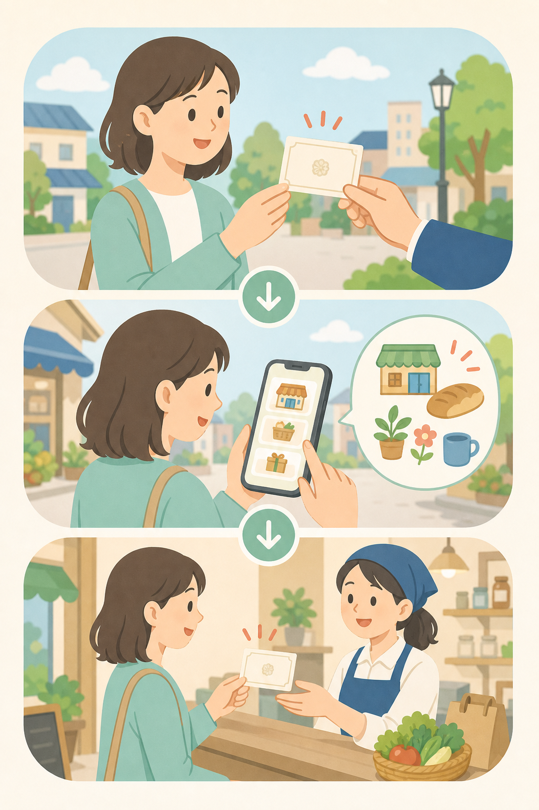

How To Use
特典の利用方法
対象店舗と条件を確認してから来店してください。特典内容や利用条件は、参加店舗ごとに異なる場合があります。

利用の流れ
-
Step 1
証明書を受け取る
投票後に受け取った投票済証明書を手元に用意します。
-
Step 2
対象店舗を確認する
対象店舗一覧から気になる店舗を選び、対象商品と利用条件を確認します。
-
Step 3
店舗で確認する
参加店舗で条件を確認し、必要に応じて投票済証明書を提示します。
実施時は、特典内容・対象商品・利用条件・有効期限を参加店舗ごとに明記します。投票の対価ではなく、投票後の地域回遊を応援する企画として設計します。